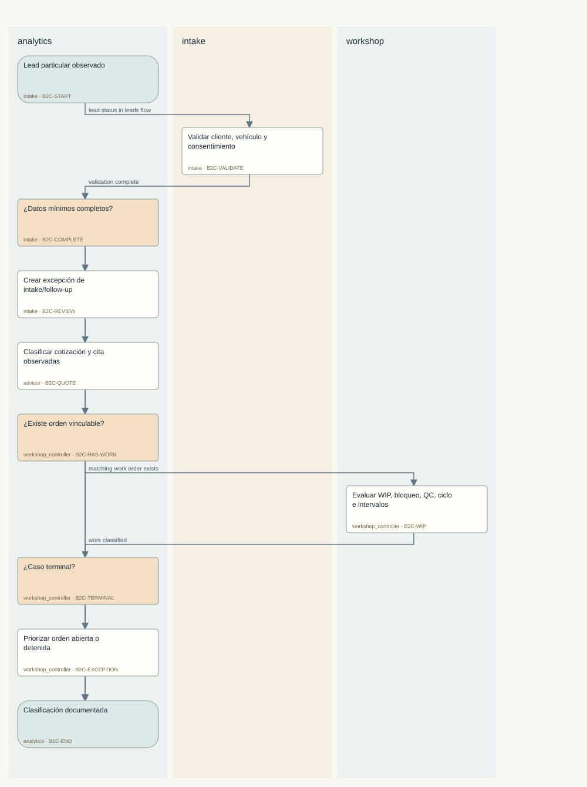
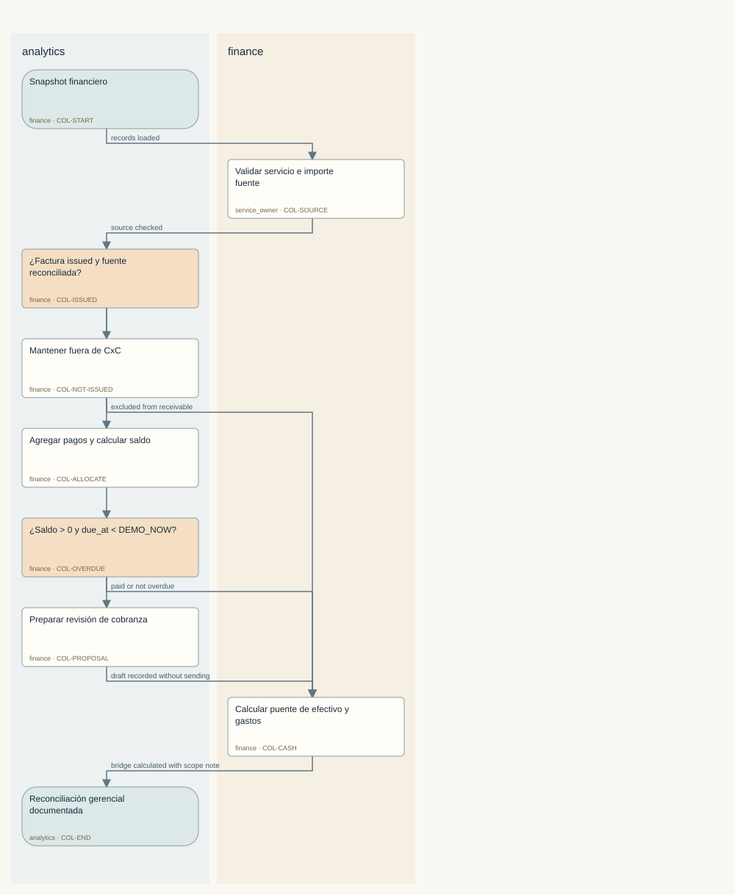
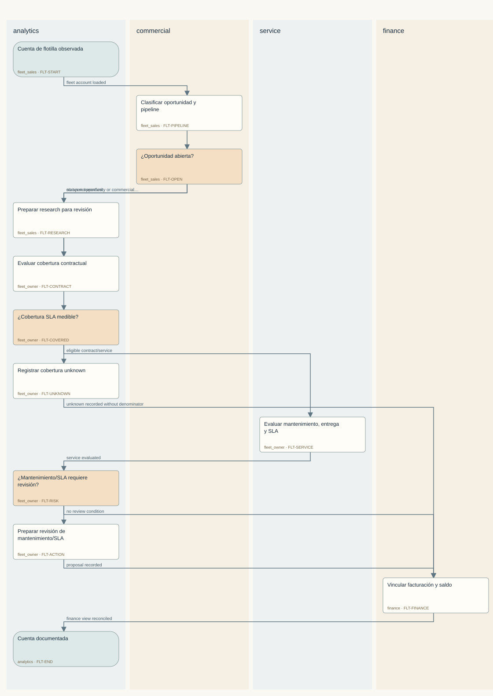
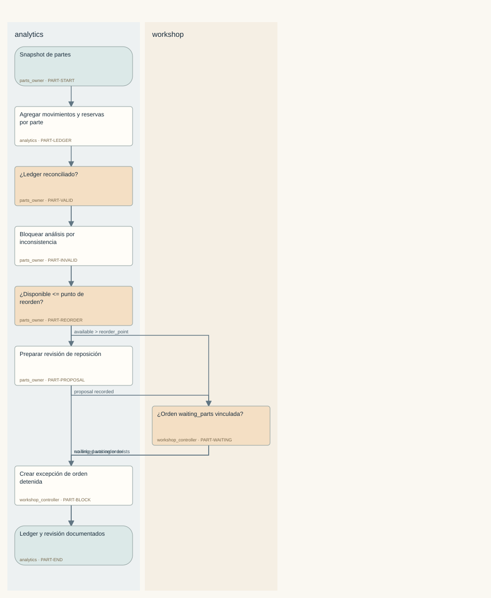
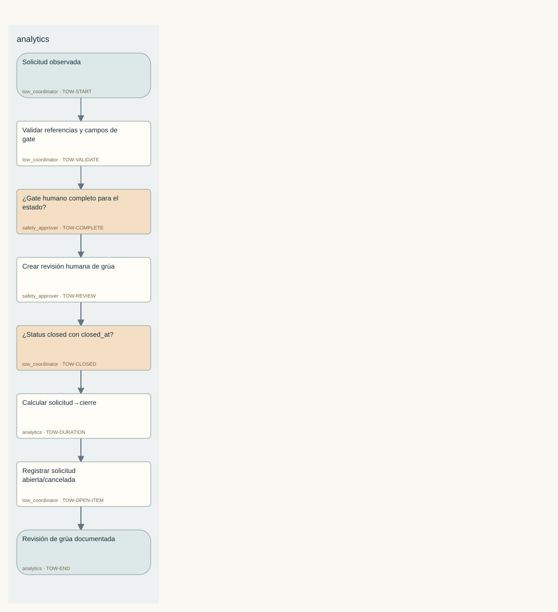
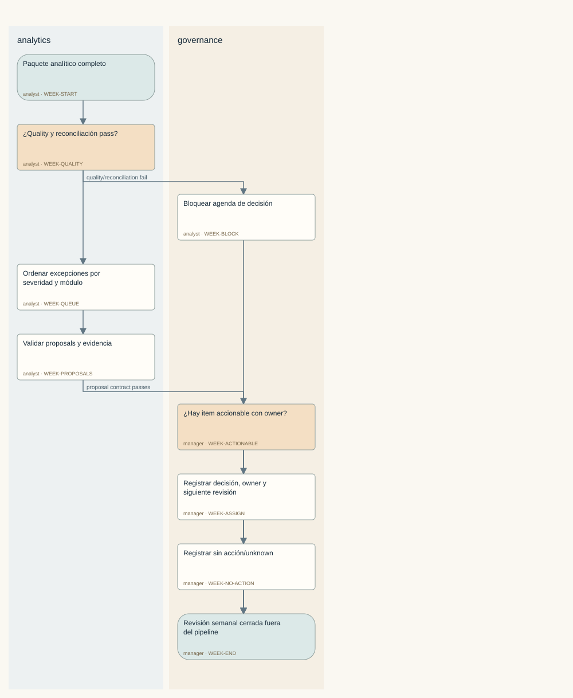
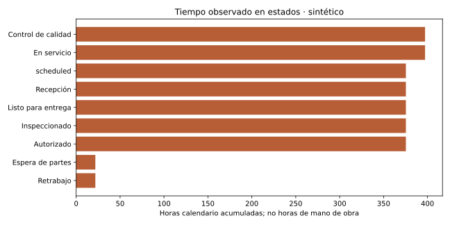

04 / Procesos y responsables
Hipótesis de proceso con decisiones, excepciones y evidencia exigida. Los mapas se generan desde las definiciones versionadas.
Recorrido analítico de particulares y taller
Reconstruir el estado observado desde lead hasta entrega o excepción sin afirmar atribución temporal no soportada.
Definición estructurada · SOP, RACI y excepciones
Ver mapa de responsables y decisiones

Actividades, responsables y evidencia
Cobranza y puente financiero gerencial
Reconciliar factura emitida, pagos, saldo, antigüedad, gastos y efectivo sin afirmar contabilidad fiscal o ingreso reconocido.
Definición estructurada · SOP, RACI y excepciones
Ver mapa de responsables y decisiones

Actividades, responsables y evidencia
Flotillas: pipeline comercial, contrato y servicio
Separar oportunidad, contrato, mantenimiento, servicio, SLA y cobranza con cobertura explícita.
Definición estructurada · SOP, RACI y excepciones
Ver mapa de responsables y decisiones

Actividades, responsables y evidencia
Partes, compras y disponibilidad analítica
Reconciliar compras, movimientos y reservas sin convertir promesas de compra en inventario disponible.
Definición estructurada · SOP, RACI y excepciones
Ver mapa de responsables y decisiones

Actividades, responsables y evidencia
Grúas: revisión analítica de hitos y gates humanos
Medir completitud y duración observada sin convertir evidencia analítica en decisión de seguridad o despacho.
Definición estructurada · SOP, RACI y excepciones
Ver mapa de responsables y decisiones

Actividades, responsables y evidencia
Revisión semanal de decisiones y evidencia
Convertir métricas y excepciones reconciliadas en una agenda humana sin ejecutar recomendaciones.
Definición estructurada · SOP, RACI y excepciones
Ver mapa de responsables y decisiones

Actividades, responsables y evidencia
Variantes observadas en el historial sintético

Conformidad, intervalos y cobertura por caso
05 / Mesa de agentes
El modo rules es una línea base reproducible. Las ejecuciones native_codex identifican por separado la inferencia efectivamente observada. Ningún modo realiza acciones externas del negocio.
Cuaderno de revisión · Cola editable de propuestas
Revisor de recepción y citas
Al corte válido 2026-09-21T18:00:00Z hay 4 leads abiertos y 1 cita pendiente. L-001 aparece como nuevo con seguimiento registrado para 2026-09-20T17:00:00Z, por lo que requiere revisión humana. Q-010 está enviada pero su vigencia registrada terminó antes del corte. Q-009 está enviada y requiere seguimiento humano. A-002 está pendiente y comienza después del corte. L-003 está cotizado, pero su cliente tiene consentimiento denegado; no debe contactarse. No se realizó ningún contacto, agenda, modificación ni envío.
Modo: Codex · inferencia verificada · completed
Resultado y evidencia · Traza de herramientas · Plan elegido por el modeloControlador de operaciones de taller
Corte válido: 2026-09-21T18:00:00Z. El riesgo principal es capacidad comprometida: hay 7 órdenes abiertas, 4 bahías ocupadas y 1 orden esperando partes. WO-003 está bloqueada por falta de filtro, sin bahía ni técnico asignados. WO-004 está en retrabajo y ocupa B-003. La evidencia de inventario muestra 8 unidades recibidas y 2 consumidas de P-001, mientras RS-001 figura como consumida y RS-002 como reservada; esto requiere conciliación humana antes de secuenciar. No se asigna personal, no se compran partes y no se cambia trabajo.
Modo: Codex · inferencia verificada · completed
Resultado y evidencia · Traza de herramientas · Plan elegido por el modeloRevisor de planeación de mantenimiento
Al corte válido as_of=2026-09-21T18:00:00Z, hay mantenimiento pendiente en M-002 y M-003, ambos con vencimiento 2026-09-30T18:00:00Z. M-003 presenta además una brecha contractual porque CT-002 figura vencido. Hay 7 órdenes de trabajo abiertas según la métrica, pero la evidencia detallada disponible solo cubre WO-002, WO-003 y WO-004. No se creó ni se propone crear una cita, y no se promete ningún SLA.
Modo: Codex · inferencia verificada · completed
Resultado y evidencia · Traza de herramientas · Plan elegido por el modeloVer borradores y sustento
Investigador de oportunidades de flotilla
Al corte válido de 2026-09-21T18:00:00Z hay 2 oportunidades abiertas. OP-001 está en estado de propuesta y vinculada con FA-001, una cuenta de logística con una flotilla de 12 unidades y responsable Laura Campos. FA-001 tiene un contrato activo que termina el 2026-12-31T23:59:59Z. OP-002 está calificada, vinculada con FA-002 y tiene seguimiento programado para el 2026-09-28T18:00:00Z; FA-002 tiene una flotilla de 8 unidades. No se realizó contacto ni se envió ningún borrador.
Modo: Codex · inferencia verificada · completed
Resultado y evidencia · Traza de herramientas · Plan elegido por el modeloVer borradores y sustento
Vigilante de evidencia SLA de flotilla
Al corte válido as_of=2026-09-21T18:00:00Z, CT-001 figura activo, con SLA de 48 horas y vigencia entre 2026-01-01T00:00:00Z y 2026-12-31T23:59:59Z. WO-H154 está asociado a CT-001, abierto el 2026-06-29T20:00:00Z y completado exactamente en due_at, 2026-06-30T02:00:00Z; esta evidencia no respalda un incumplimiento. WO-H153 figura entregada y completada exactamente en due_at, pero faltan en la evidencia elegible su contract_id y opened_at, por lo que no puede evaluarse completamente contra el SLA. La métrica incluida reporta 1 contrato activo y 7 órdenes abiertas, pero no se usa para declarar incumplimiento.
Modo: Codex · inferencia verificada · completed
Resultado y evidencia · Traza de herramientas · Plan elegido por el modeloVer borradores y sustento
Asistente de revisión de despacho de grúas
Al corte válido as_of=2026-09-21T18:00:00Z hay 2 grúas activas. TW-002 figura en_route y tiene referencias de aprobación y seguridad, pero su unidad TU-002 tiene capacidad arrastre. TW-003 figura requested y carece de unidad, aprobación humana y referencia de seguridad. No se realiza despacho ni se toma una decisión de seguridad.
Modo: Codex · inferencia verificada · completed
Resultado y evidencia · Traza de herramientas · Plan elegido por el modeloVer borradores y sustento
Asistente de revisión de cobranza
En la muestra de 6 facturas/casos, las métricas globales del corte reportan 164 facturas emitidas y 56 facturas sin pago completo. El resumen de pagos vincula pagos completos a INV-H160, INV-H158, INV-H157 e INV-H155. INV-H159 e INV-H156 presentan conciliación parcial: el pago vinculado a INV-H159 es de 63750 centavos frente a una factura de 127500 centavos, y el pago vinculado a INV-H156 es de 45000 centavos frente a una factura de 90000 centavos. Estas son preguntas para revisión humana; no se realizó cobro, movimiento de dinero ni emisión fiscal.
Modo: Codex · inferencia verificada · completed
Resultado y evidencia · Traza de herramientas · Plan elegido por el modeloVer borradores y sustento
Planificador de revisión de marketing
La evidencia muestra que CAM-001 está en revisión, dirigida a particulares y orientada a recurrencia. CAM-002 figura como aprobada, pero su borrador sigue siendo genérico y requiere confirmar la audiencia fleet y la base de consentimiento antes de cualquier publicación. No se envió ni publicó ningún mensaje.
Modo: Codex · inferencia verificada · completed
Resultado y evidencia · Traza de herramientas · Plan elegido por el modeloVer borradores y sustento
Facilitador de revisión operativa semanal
Al corte válido as_of=2026-09-21T18:00:00Z, hay 7 órdenes de trabajo abiertas, 2 remolques activos y 56 facturas impagas. Los principales puntos para revisión son WO-003 bloqueada por falta de filtro, WO-004 en retrabajo, TW-003 sin aprobación humana ni unidad asignada, y dos facturas con fechas de vencimiento anteriores al corte. Estos datos deben convertirse en preguntas de revisión; no se asignan responsables ni se ejecutan acciones.
Modo: Codex · inferencia verificada · completed
Resultado y evidencia · Traza de herramientas · Plan elegido por el modeloVer borradores y sustento